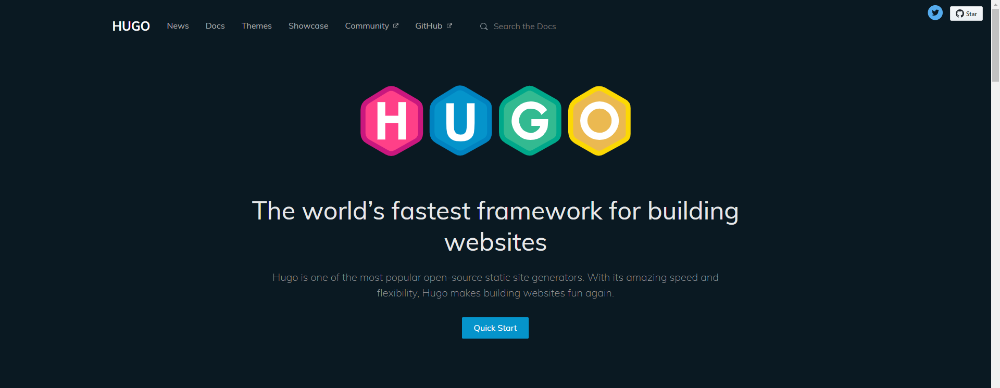
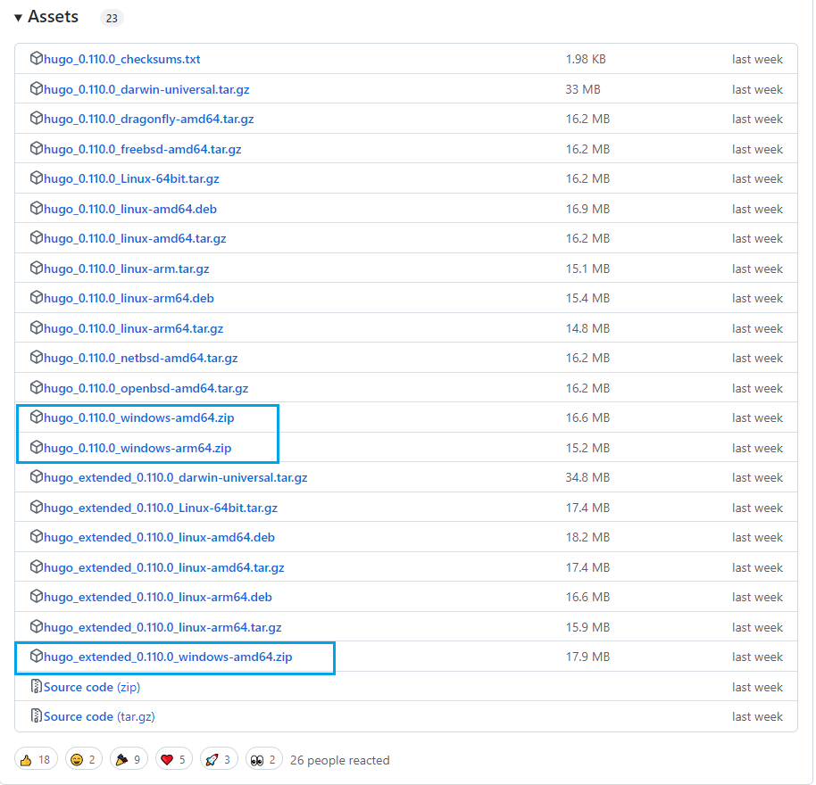
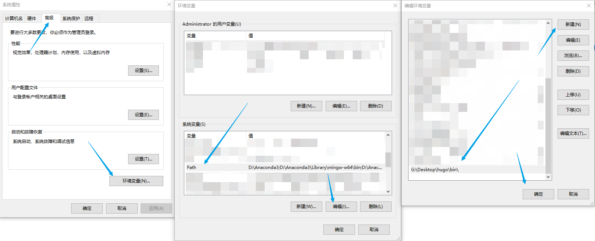
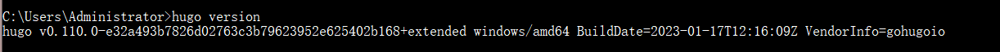
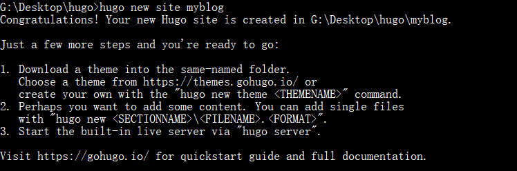
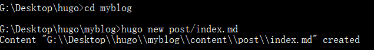
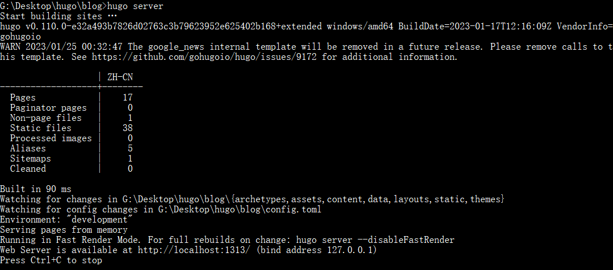
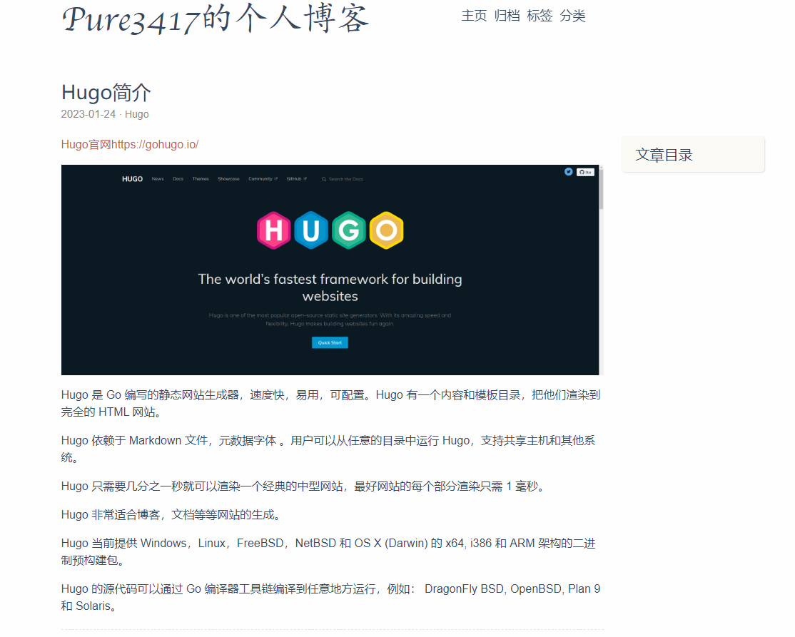

Hugo安装与部署
文章目录
Hugo简介

Hugo 是 Go 编写的静态网站生成器，速度快，易用，可配置。Hugo 有一个内容和模板目录，把他们渲染到完全的 HTML 网站。
Hugo 依赖于 Markdown 文件，元数据字体 。用户可以从任意的目录中运行 Hugo，支持共享主机和其他系统。
Hugo 只需要几分之一秒就可以渲染一个经典的中型网站，最好网站的每个部分渲染只需 1 毫秒。
Hugo 非常适合博客，文档等等网站的生成。
Hugo 当前提供 Windows，Linux，FreeBSD，NetBSD 和 OS X (Darwin) 的 x64, i386 和 ARM 架构的二进制预构建包。
Hugo 的源代码可以通过 Go 编译器工具链编译到任意地方运行，例如： DragonFly BSD, OpenBSD, Plan 9 和 Solaris。
Hugo安装
Hugo的安装方式有很多， Installation | Hugo，可以根据个人的实际情况进行安装。
Win
下载解压
在Releases · gohugoio/hugo中下载想要的版本zip，解压得到一个hego.exe的可执行文件，理论上可以放到任何位置，最好不要放在带有中文的路径。

配置环境变量
将Hugo添加到windows的环境变量PATH中。
右击计算机—>属性—>高级系统设置—>环境变量—>系统变量—>Path—>编辑—>新建—>添加Hugo.exe存放的路径—>确认

验证
在cmd或者git bash中执行hugo version

其他系统
待补充
创建博客（站点）
新建站点
在自己的目录下，例如我这里是G:\Desktop\hugo，打开cmd或者git bash
输入hugo new site '你的文件名字'，便可生成一个用于存放博客的文件夹

目录结构
目录结构 Directory Structure | Hugo
|
|
安装主题
Hugo没有自带主题，所以建立完文件夹后要导入主题文件。可以用git clone 的方式，也可以到相应主题的github中下载zip文件然后解压到自己博客的themes文件夹中。
官网主题库：Hugo Themes
Hugo配置文件放置在源文件下，并且支持三种格式：toml，yaml，yml。这个配置文件可以直接从主题文件中的exampleSite 里copy到博客文件夹下，然后进行修改。
- 注意点1：有些主题没有提供相应的配置文件，得进行自己修改，不建议选用这类主题。
- 注意点2：配置文件中要确保里面的主题名字和你themes文件夹中相应的主题文件夹名字一样，比如我的主题是pure，那么配置文件里的theme = pure，并且themes 文件夹中也有一个pure的文件夹。这是为了保证工具能依据名字找到相应的主题文件。
生成博文
在cmd或者git bash中，进入你新生成的站点，执行hugo new post/xxx.md ，这时会在content/post文件夹下生成你的markdown文件，打开编辑即可。

渲染
在博客文件夹中打开Git Bash 或 cmd，输入 hugo server，然后在浏览器访问 http://localhost:1313/ 来查看效果。

注意，markdown文件中的 front matter 部分有一个draft 参数，如果draft设置为true 则可正常渲染，如果设置为false则不予以渲染。相应的如果想查看全部效果则输入hugo server -D 表示将草稿文件也进行渲染。

文章作者 Pure3417
上次更新 2023-01-24